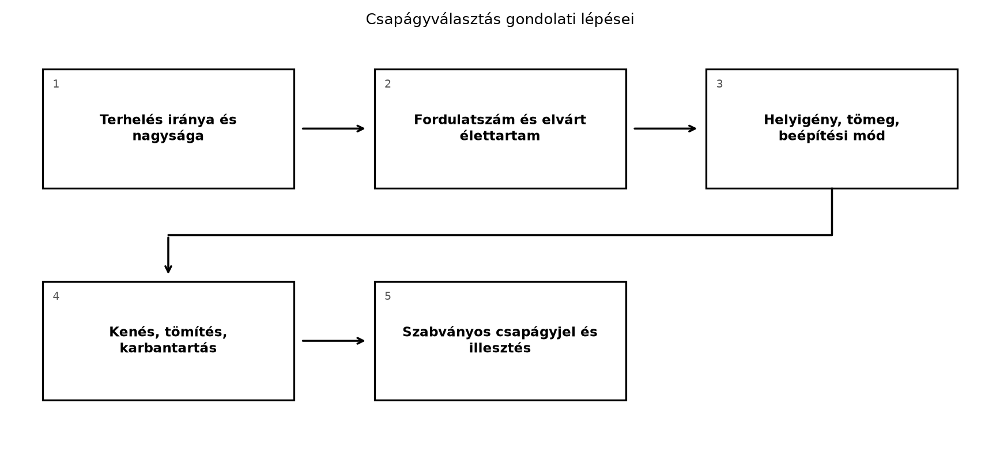

A műhelyben két, látszólag nagyon különböző panasz is ide vezet. Az egyik: országúton egyre hangosabb, sebességfüggő búgás jön az első kerék felől, és jobbra kanyarodva erősödik – a kerékcsapágy gyanús. A másik: hidegindítás után rövid, tompa kopogás hallatszik a motor mélyéből, ami melegedés után halkul – ez pedig a főtengelycsapágy túlzott hézagára utalhat. Mindkét hiba ugyanazt a gépelem-családot érinti: a tengelyt és a csapágyazását. Ha nem érted, miért más típusú csapágy kell a kerékagyba, mint a főtengelybe, akkor a javítás is csak találgatás lesz.
Képzelj el egy vízszintes tengelyt, amelyet két megtámasztás tart. Ha a tengely közepére nyomsz, a tengely meghajlik, mint egy két kézzel tartott gumirúd. Ha a tengely egyik végét el is akarod fordítani, akkor a tengely csavarodik is. A csapágyak a megtámasztásnál ülnek, és átadják a terhet a házra, miközben a tengelyt forgásban tartják. A főtengelynél a hajtórúd lökésszerű nyomása hajlítja a forgattyús csapokat, a motor nyomatéka pedig csavarja a tengelyt; a csapágyaknak ebben a zsúfolt, olajos térben kell dolgozniuk. A kerékagynál viszont a csapágyat az autó tömege és a kanyarban fellépő oldalerő egyszerre terheli, ráadásul zsírkenésű, egységszerű szerelésre van szüksége.
Definíció. A tengely (shaft) olyan forgó vagy álló gépalkatrész, amely forgó elemeket (fogaskerekeket, szíjtárcsákat, csapágyakat) hordoz, és forgó mozgást, nyomatékot visz át. A csapágy (bearing) a tengely megtámasztását adó gépelem: átadja a terhet a házra vagy tartószerkezetre, miközben meghatározott relatív mozgást enged meg.
A tengely fő igénybevételei:
Szabály. A tengely megfelelőségéhez kell, ahol a választott anyagra és biztonsági tényezőre megengedett feszültség. A biztonsági tényező járműalkatrésznél a terhelés bizonytalanságát, a dinamikus hatásokat és a gyártási egyenetlenséget fedezi.
Definíció. Az egyenszilárdságú kialakítás azt jelenti, hogy a tengely keresztmetszete úgy követi a nyomatéki ábrát, hogy a feszültség a hossz mentén közel azonos legyen. Ezzel anyag és tömeg takarítható meg, de a megmunkálás drágább; járműveknél gyakran a lépcsős, de nem teljesen egyenszilárdságú változat az elfogadható kompromisszum.
Összefüggés. A csapágyazott tengely hajlító sajátlengése fontos, mert a forgó tömeg kiegyensúlyozatlansága a sajátfrekvencia közelében rezonanciát gerjeszt. Kéttámaszú, középen tömeggel helyettesített tengelyre a hajlító rugóállandó:
a kritikus szögsebesség , a kritikus fordulatszám pedig
Az üzemi fordulatszámnak a kritikus fordulatszámtól megfelelően távol kell lennie, mert a rezonancia gyors kifáradást és törést okoz.
A diagram blokk a csapágytípus kiválasztásának gondolati
lépéseit foglalja össze.

Az ábra lépései: először a terhelés irányát és nagyságát kell meghatározni. Radiális, axiális vagy kombinált terhelésről van szó, és mekkora erő hat a csapágyra. Ezután a fordulatszám és az elvárt élettartam következik, mert nagy fordulatnál a gördülőcsapágy, lassú lengőmozgásnál a szilent vagy siklócsapágy előnyös lehet. A helyigény, tömeg és szerelhetőség gyakran dönt a kiviteli változatok között. A kenés és tömítés határozza meg, meddig marad használható a csapágy. Végül a gyártói rajz vagy adatbázis szerinti csapágyazonosító és illesztés biztosítja, hogy a választott csapágy a konkrét járműbe pontosan illeszkedjen.
A tengely nem egyszerű henger: lépcsőzött átmérőit a rá szerelt fogaskerekek, csapágyak, tömítőgyűrűk és biztosítóelemek igényéhez alakítják. A vállak a csapágy vagy fogaskerék pontos tengelyirányú helyzetét adják, a reteszhorony és a bordás tengely a nyomaték átadását szolgálja. A tengelyen éles sarok, beszúrás vagy menetgyök feszültséggyűjtő hely: a kifáradás rendszerint innen indul. Ezért a vállakat lekerekítik, a fontos átmeneteket köszörülik; ha tömítőgyűrű dolgozik rajta, a felületi érdesség is előírt.
A hajtott tengely nyomatéka a teljesítményből:
Ahol a tengely hajlított is, ott a két igénybevételt redukált feszültséggel egyesítjük. A kifáradási biztonságot az anyagválasztáson, a felületi keménységen és a geometriai átmenetek mellett a csapágyak közelsége is befolyásolja: merev, jól beállított csapágy kisebb hajlítónyomatékot enged a csapra.
A siklócsapágy két, egymáson elcsúszó felületből áll: a tengelycsapból és a csapágycsészéből vagy -perselyből. A főcsapágy két fél csészéje a hengertömbben és a csapágyfedélben, a hajtórúdcsapágyé a hajtórúd nagy szemében ül, és a csap kenőolajhoz jut. Indulás előtt a csap a csapágyon fekszik; ha a motor forog, az olajat a csap forgása a szűkülő résbe húzza.
Definíció. A hidrodinamikus kenés olyan folyadékkenési állapot, amelyben a forgó csap és a csapágy között összefüggő, nyomás alatt álló olajfilm alakul ki, és ez a film teljesen elválasztja a fémfelületeket. A teherhordást nem az olaj nyomás alatti betáplálása, hanem a forgás keltette ékszerű nyomáseloszlás hozza létre.
A csap a forgás során az olajat a szűkülő résbe „húzza”, az olaj nyomása a rés szűkületénél megnő, és a csapot felemeli a csapágyról. Így a fémrészek nem érnek össze, a kopás elhanyagolható. A hidrodinamikus kenés csak megfelelő fordulatszám, hézag, olajviszkozitás és terhelés mellett áll fenn. Induláskor és leálláskor határkenés vagy vegyes kenés van, amikor a felületek közvetlenül érintkezhetnek; ezért a főtengelycsapágy anyagának puha, jó beágyazódó csapágyfémnek kell lennie, hogy a szennyeződés vagy a rövid érintkezés ne karcolja meg a kemény tengelycsapot.
Az ábrán (a rés erősen eltúlozva) a forgó csap a forgás irányában kitérve úszik az olajfilmen; a szűkülő résben (olajék) a nyomás a legkisebb résvastagság () előtt a legnagyobb, és ez tartja a terhelést. A jobb oldali kis képek a három állapotot mutatják: álló helyzetben a csap a csészén fekszik, induláskor vegyes kenés van, üzemi fordulaton kialakul a hidrodinamikus kenés. A HTML-változatban a fordulatszám és az olaj hőmérséklete állítható; a szemléltetés minőségi.
A főtengelycsapágy anyaga leggyakrabban kemény acélhátra felvitt ólom- vagy óntartalmú fehérfém, bronz vagy alumínium alapú réteg. A fehérfém lágy, bejáratódik, a bekerülő apró szennyeződést beágyazza, és vészkenésként is szolgál. A főtengely- és hajtórúdcsapágy olajhézaga jellemzően néhány század milliméter (például 0,02–0,07 mm); a pontos érték gyártói adat (ellenőrizendő: a motor gyártói javítási adata). A túl nagy hézag csökkenő olajnyomást, kopogást és olajfilm-szakadást, a túl kicsi hézag beszorulást és helyi túlmelegedést okoz.
A gördülőcsapágy gördülőelemeket – golyókat, görgőket, kúpgörgőket vagy tűket – helyez a belső és külső gyűrű futópályái közé. A gördülőelemek a csúszást nagyrészt gördüléssel helyettesítik, ezért a súrlódás kisebb, a kenés és a tömítés egyszerűbb, az indítási nyomaték pedig alacsony. A gördülőcsapágy általában kevésbé tolerálja a lökéseket, mint a hidrodinamikus siklócsapágy, és a beépítés helye jellemzően merevebb kialakítást igényel.
A gördülőcsapágyak fő típusai a terhelés iránya szerint:
Táblázat. Csapágytípusok és jellemző járműpéldáik
| Csapágytípus | Terhelés iránya | Főbb tulajdonság | Járműpélda | Kenés |
|---|---|---|---|---|
| Siklócsapágy | radiális, egyes kiviteleknél axiális | olajfilmen dolgozik, csillapítja a lökést | főtengely-, hajtórúdcsapágy | motorolaj |
| Mélyhornyú golyós | radiális és mérsékelt axiális | nagy fordulatra, egyszerű szerelés | generátor, vízszivattyú, feszítőgörgő | zsír vagy olaj |
| Hengergörgős | nagy radiális | merev, nagy teherbírás | sebességváltó-tengely, kerékagy egyes kivitelek | olaj vagy zsír |
| Kúpgörgős | kombinált radiális és axiális | bontható, hézag állítható | kerékagy, differenciálmű | zsír vagy olaj |
| Tűgörgős | nagy radiális, kis beépítési magasság | kis külső átmérő | sebességváltó bolygókerék, kétütemű motor hajtórúdjának kis szeme | olaj vagy zsír |
| Elasztomer (szilent) | radiális, torziós | rugalmas, zajt csillapít, kenést nem igényel | lengőkar bekötése, stabilizátor | nincs |
Az adatok rendszerezési példák; a konkrét járműhöz a gyártói csapágyazonosító és javítási adat mérvadó (ellenőrizendő).
A kúpgörgős csapágy járműipari jelentősége kiemelkedő: a kúpos futópályák miatt a radiális és az axiális terhelést egyszerre képes felvenni, és a sorozat jellemzően bontható, így a hézag a szereléskor beállítható. A kerékagyban gyakran két, egymással szemben szerelt kúpgörgős csapágy dolgozik; a beállításukkal a kerékcsapágy-játék méretét és a futási tulajdonságokat szabályozzák. A modern kerékagyakban sokszor két sorban szerelt, tömített, előfeszített csapágyegység található, amelyet a gyártó szerint nem utánállítani, hanem cserélni kell.
Az ábra felső sora a négy gördülőcsapágy-típus félmetszetét mutatja: a függőleges nyíl a radiális, a vízszintes az axiális terhelhetőség (vastag: nagy, szaggatott: mérsékelt, ×: nem viseli). Alul két kúpgörgős csapágy dolgozik O-elrendezésben a kerékagyban: a külső gyűrűk az agyban, a kúpok a tengelycsonkon ülnek, a játékot a hézagállító anya állítja.
A gördülőcsapágyak jelölése általában szabványos alapszámból és kiegészítő jelekből áll. Például a 6205 alapszám mélyhornyú golyóscsapágyat jelöl, ahol a számsor a méretsorozatot és a furatátmérőt kódolja (itt furat, ellenőrizendő a szabványos jelölési táblázat szerint: ISO 15/DIN 623 alapján). A kiegészítő jelek a tömítést, a kenőanyagot, a játékot vagy a pontosságot adják meg; a járműjavításban mindig a beépített csapágy teljes jelölését kell rögzíteni, nem csak az alapszámot.
A gördülőcsapágy belső gyűrűjét a tengelyhez, külső gyűrűjét a házba illesztik. A forgó gyűrűnek jellemzően szilárd illesztést adnak, hogy ne csússzon meg a társfelületen; az álló gyűrűt lazább illesztéssel szerelik, hogy a hőtágulást és a szerelést kövessék. A pontos tűrés a terhelés, a hőmérséklet és a működési mód függvénye; gyártói rajz nélkül nem hagyható el az ellenőrzés.
Beépítési szabály. A csapágyat erővel csak a szilárdan illesztett gyűrűjén át szabad felpréselni. Például ha a belső gyűrű szilárd a tengelyen, a nyomóerő a belső gyűrűre hasson, soha ne a külső gyűrűn vagy a gördülőelemeken át. A csapágyat melegíthetjük is, ha a tűrés azt indokolja; a hőmérséklet gyártói előírás szerinti (nyitott csapágynál jellemzően legfeljebb kb. 110–120 °C, zárt, zsírzott csapágynál kb. 80 °C – ellenőrizendő: a csapágygyártó adata; lásd a Gépi megmunkálás és gépelemek szerelése: esztergálás, köszörülés, csapágyak, fogaskerekek, tömítések alfejezetet). Ütőszerszámos, közvetlen kalapácsos beütés tilos, mert a futópályán pontszerű károsodás keletkezhet.
A tömítés célja a kenőanyag benntartása és a szennyeződés távoltartása. Járműcsapágyaknál gyakori az ajakos szimering, a labirint vagy a kombinált tömítés. A tömítést a megadott irányba, megfelelő mélységbe, sérülésmentesen kell beépíteni; a szereléshez használt tüskék, paszták és zsírok a gyártói javítási utasítás szerintiek.
Számítás. Adott: a tengely teljesítményt visz át fordulatszámon. A hajlítónyomaték . A megengedett feszültség . Keresett a szükséges átmérő tömör körre, hajlítás és csavarás együttes hatására.
A szögsebesség:
A csavarónyomaték:
A és közelítésekkel:
A redukált feszültség:
A képlettel:
A méretezett tengely átmérője legalább . A gyakorlatban ezt a váll, reteszhorony és csapágyillesztés miatt tovább növeljük, és a gyártó a kiválasztott csapágyfurathoz igazítja. ∎
Számítás. Adott egy átmérőjű, hosszú acél tengely, . Közepére redukált forgó tömeg . Keresett a hajlító kritikus fordulatszám közelítő értéke.
A másodrendű nyomaték:
A hajlító rugóállandó:
A kritikus szögsebesség:
A kritikus fordulatszám:
Ha az üzemi fordulatszám ennek közelébe esne, az kiegyensúlyozatlanság miatt veszélyes hajlító lengést okozna. Ezért a járműhajtásoknál a tengelyt úgy méretezik, hogy a kritikus fordulatszám az üzemi tartomány fölött legyen, vagy a csapágyak és a tömegelosztás úgy hangolják, hogy a rezonanciát gyorsan áthaladva elkerüljék. ∎
Csapágyas alkatrész bontásakor a következőket kell ellenőrizni. A felsorolás ellenőrzőlista, a pontos értékeket minden esetben a gyártói javítási adathoz kell viszonyítani (ellenőrizendő).
Egy autó hátuljából sebességfüggő búgás hallatszik, amely autópályán jobbra kanyarodva felerősödik. A műhelyben a járművet felemelik, a gyártói emelési pontokon bakra támasztják, és a hátsó kereket kézzel forgatják. A kerékagy felől érdes, morajló hang hallatszik; a kerékcsapágy belső és külső játéka a vizsgáló készülék vagy a gyártói módszer szerint megemelkedett. A házba szerelt, tömített kerékcsapágy-egység javításakor a csapágyat a gyártó által előírt szerszámmal préselik ki, előtte a kerékfordulatszám-érzékelőt, ABS-jeladógyűrűt vagy féktárcsát az utasítás szerint eltávolítják. A csapágyüléket megtisztítják, és ellenőrzik, hogy a furat nem tágult-e, nem korrodált-e. A beépítéskor tilos a gördülőelemeken keresztül terhelni; a tüske a szilárdan illesztett gyűrűre feküdjön fel. A központi anyát a gyártói meghúzási nyomatékkal, gyakran új anyával húzzák meg (ellenőrizendő: gyártói adat), mert az önzáró anya vagy a nyomatékhatároló kialakítás nem újrafelhasználható.
Biztonsági korlát. A feladat tanműhelyi környezetre, oktató felügyeletére és a gyártói javítási utasítás betartására vonatkozik; a megadott értékek tanulási példák. Csapágyprésnél a munkadarabot és a tüskét biztonságosan kell tartani, a sérült csapágy éles, törött részei vágási sérülést okozhatnak, ezért védőkesztyű és védőszemüveg szükséges.
Környezetvédelem. A bontáskor kikerülő kenőzsír, olaj és mosófolyadék veszélyes anyag. Felfogni, a gyűjtőedényt feliratozni, és a műhely hulladékkezelési előírása szerint leadni; a csapágyat fémhulladékként, szükség szerint elkülönítve kell gyűjteni.
A csere után a járművel próbaút történik: a búgás megszűnt, a kerék nem melegszik szokatlanul, a fékezés egyenletes marad. Tanulság: a kerékcsapágy hibáját nemcsak a zaj alapján kell feltételezni, hanem a pontos játék- és futásvizsgálattal is igazolni, mert hasonló búgást a szabálytalanul kopott gumiabroncs is okozhat.
Hiba. A szerelő a csapágyat kalapáccsal és lapos ütőszerszámmal veri be, miközben az erő a gördülőelemeken át adódik. A futópályán pontszerű lenyomatok keletkeznek, a csapágy néhány száz kilométer után zúg. Helyes gyakorlat: a megfelelő gyűrűre feküdjön fel a tüske vagy a présszerszám; melegítésnél a gyártói hőmérsékletet ne lépd túl.
Hiba. A kúpgörgős kerékcsapágy utánállításakor a csapágyanyát „biztos, ami biztos” alapon túlhúzzák. A csapágy melegszik, a kenőzsír elfolyósodik, és a futópálya berágódik. Helyes gyakorlat: a gyártói hézag/előfeszítés szerinti beállítás, meghúzási nyomatékkal vagy pontos szöghelyzettel; a beállítás után ellenőrző forgatás.
Hiba. A főtengelycsapágy cseréjekor a csapágycsészét rosszul jelölt helyzetből szerelik vissza, vagy a kenőfurat nem fed pontosan. Az olajellátás megszűnik, a csapágy azonnal tönkremegy. Helyes gyakorlat: a csészék jelölését, az olajfurat egyezését és a hézagot összeszerelés előtt ellenőrizni kell; a csapágyhézagot gyártói előírással, például plasztikus mérőszál vagy mérés szerint kell ellenőrizni (ellenőrizendő: gyártói eljárás).
Hiba. A szilentek csavarjait felemelt járművön, lelógó (kirugózott) kerekekkel húzzák meg. Leengedés után a gumibetét elcsavart, előfeszített helyzetbe kerül, ezért idő előtt szakad. Helyes gyakorlat: a torziósan elmozduló gumicsapágy csavarjait a gyártói terhelési helyzetben kell meghúzni (a jármű kerekein állva vagy a kerékagyat emelővel a gyártói méretre emelve; ellenőrizendő: gyártói javítási utasítás).
1. feladat (A)
Mondd el, mi a lényeges különbség a siklócsapágy és a gördülőcsapágy
működési elve között!
2. feladat (A)
Egy tengely pusztán csavaró igénybevételnek van kitéve:
,
átmérője
.
Határozd meg a csavarófeszültséget!
3. feladat (B)
Egy hajtott tengely hajlítónyomatéka
,
csavarónyomatéka
.
A megengedett redukált feszültség
.
Mekkora tömör tengelyátmérő szükséges?
4. feladat (B)
Rendezd a műhelyben előforduló csapágyakat: főtengelycsapágy, kerékagy,
generátor, lengőkar-szilent. Melyikhez melyik csapágyfajtát rendelnéd,
és mi az oka?
5. feladat (C)
Egy kéttámaszú tengely
,
hossza
,
anyaga acél,
.
A középen elhelyezett forgó tömeg
.
Számold ki a közelítő kritikus fordulatszámot, és értékeld, hogy az
üzemi fordulatszám biztonságos-e!
6. feladat (D)
Ügyfél panasza: a jobb első kerék felől zúgás hallatszik, amely
kanyarban változik. A felemelt kocsin a kereket megforgatva enyhe
surrogást hallasz, de a csapágyjáték látszólag kicsi. Milyen további
vizsgálatokat végeznél, és hogyan döntenéd el, hogy kerékcsapágy vagy
gumiabroncs a hiba?
1. feladat (A)
A siklócsapágy két csúszó felületből áll, ahol ideális esetben
hidrodinamikus olajfilm választja el a fémeket; a kenés kimagaslóan
fontos, viszont a felület csillapítja a lökést, és a csapágy anyaga
beágyazza a szennyeződést. A gördülőcsapágy gördülőelemekkel
helyettesíti a csúszást, kisebb a súrlódása indításkor, egyszerűbb a
kenése, viszont érzékenyebb a pontszerű túlterhelésre és a helytelen
beépítésre.
2. feladat (A)
Adott:
,
.
Képlet:
.
Behelyettesítve:
3. feladat (B)
A kidolgozott példa képletével:
A tengely legalább átmérőjű.
4. feladat (B)
Főtengelycsapágy: siklócsapágy, mert nagy terhelés, lökésszerű
igénybevétel, motorolajos kenés, és az olajfilm csillapítja a zajt,
kopogást. Kerékagy: kúpgörgős vagy két soros gördülőcsapágy, mert
radiális és kanyarbeli axiális erőt is fel kell vennie. Generátor:
mélyhornyú golyós csapágy, mert nagy fordulat, mérsékelt axiális és
radiális terhelés, egyszerű zsírtömítés. Lengőkar-szilent: elasztomer
csapágy, mert nem teljes körforgást, hanem lengőmozgást és rugalmas
bekötést igényel, kenés nélkül.
5. feladat (C)
,
.
Az csak kb. 11%-kal nagyobb a -es közelítő kritikus fordulatszámnál, ezért az üzem a rezonancia közelében folyna: nem biztonságos. Megoldás: merevebb (nagyobb átmérőjű, rövidebb) tengely vagy kisebb tömeg, hogy a kritikus fordulatszám az üzemi tartomány fölé kerüljön (például -nél ). A feladatban a tömegredukció és a megfogási mód közelítő, ezért a számított érték csak szemléltető; a gyártói méretezés pontosabb modellt használ. ∎
6. feladat (D)
Először a kerekek, a guminyomás, a futófelület és a csavarok állapotát
ellenőrzöd. Ha a csapágy gyanús, a járművet felemeled, bakra támasztod.
Megfogod a kereket függőleges és vízszintes irányban, és megpróbálod
mozgatni; a valódi kerékcsapágyjáték a futómű szabályaitól függ, ezért a
gyártói mérési módszert követed. A kereket megforgatod, sztetoszkóppal
vagy csavarhúzóra szorított füllel hallgatod a kerékagyat. A gumiabroncs
gördülési zaját a kerék cseréjével tudod kizárni: ha másik, ismert jó
kerékkel a zaj megszűnik, a gumi a forrás. Ha a zaj megmarad, és a
kerékagy felé eső hang erősebb, a kerékcsapágy a valószínű ok. A mérést
a jármű gyártói emelési pontjainak és biztonságos alátámasztásának
betartása előzi meg.
A tengely hajlítást és csavarást visel, ezért méretezéséhez a hajlító és csavaró feszültséget, valamint a redukált feszültséget használjuk: , , . A és közelítések tömör körre érvényesek. A tengely vállainak lekerekítése a kifáradás ellen véd, mert a repedés feszültséggyűjtő helyről indul. A kritikus fordulatszám a hajlító sajátlengésből számítható, és az üzemi tartományt úgy kell megválasztani, hogy a tengely ne kerüljön rezonanciába. A siklócsapágy, mint a főtengelycsapágy, hidrodinamikus kenésű: a forgó csap az olajat a szűkülő résbe húzza, a kialakuló nyomás elválasztja a fémfelületeket. A gördülőcsapágy golyós, görgős, kúpgörgős vagy tűgörgős változatban érhető el; a kiválasztás alapja a terhelés iránya, a fordulatszám, a helyigény és a kenés. A szerelésnél a szilárdan illesztett gyűrű tüske felől kaphat erőt, a gördülőelemen át beütni tilos. A kerékcsapágy és a főtengelycsapágy szerelésekor mindig a gyártói csapágyazonosítót, hézagot, tömítést és meghúzási nyomatékot kell követni. Továbbvitt eredmény: a csapágytípusok kiválasztását a Tengelykapcsolók, szabadonfutók és fékek gépelem-szinten alfejezetben a tengelykapcsolóra ható nyomóerő és a kinyomócsapágy igénybevétele, a Forgattyús tengely, lendkerék, csapágyak és tömegkiegyenlítés alfejezetben pedig a főtengelycsapágy és a hajtórúdcsapágy hézaga, anyaga és kenése szempontjából használjuk.